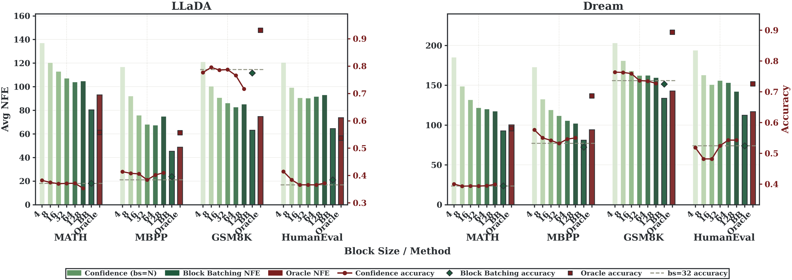
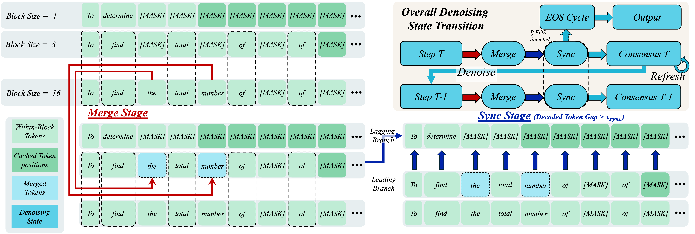
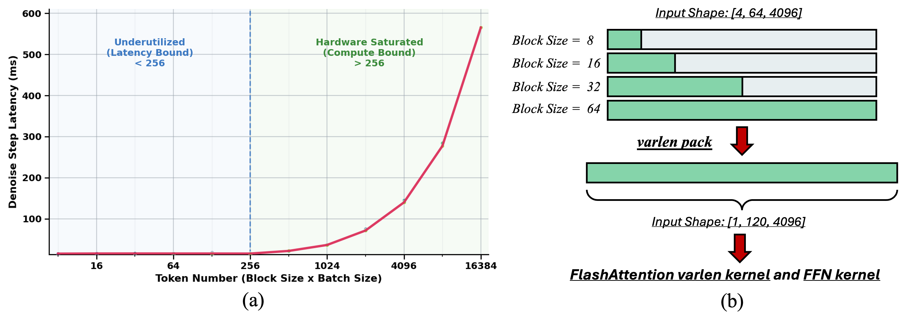
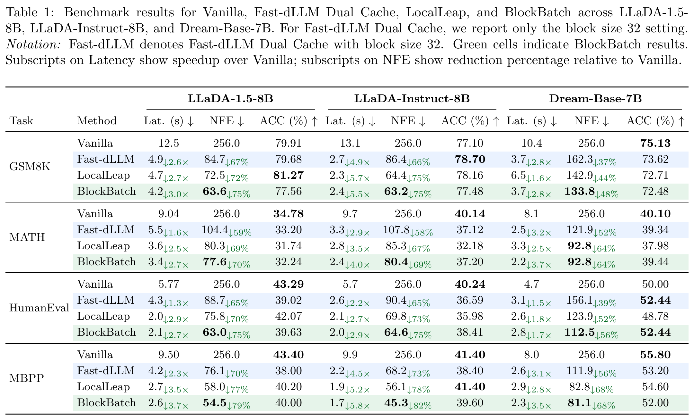

Confidence-Gated Merge
Compatible branches transfer token proposals only when the destination branch assigns sufficient probability to the proposed token.
Diffusion LLM Inference
Multi-Scale Consensus Decoding for Efficient Diffusion Language Model Inference
Georgia Institute of Technology
Abstract
Diffusion language models generate text by iteratively denoising multiple token positions in parallel. In block-wise dLLM inference, small blocks preserve local conditioning but require many denoising steps, while large blocks expose more parallelism but can make premature commitments and accumulate cache error.
BlockBatch treats block size itself as a useful branching dimension. It executes multiple block-size branches for the same request inside batched model forwards, then coordinates those branches with confidence-gated token merging, leader-based synchronization, and periodic full-sequence KV refresh.
Motivation
Per-sample oracle results show that block sizes induce complementary accuracy-NFE tradeoffs. BlockBatch turns this observation into an online multi-branch decoding strategy.

Method
Each branch owns its sequence row and KV-cache row. Large-block branches advance aggressively, small-block branches provide conservative alternatives, and consensus operations exchange only compatible high-confidence information.
Compatible branches transfer token proposals only when the destination branch assigns sufficient probability to the proposed token.
Lagging branches copy the sequence state and KV row of a sufficiently advanced branch, avoiding wasted computation in stale regions.
Periodic refreshes recompute branch KV states, re-anchoring local block updates to a globally consistent state.

System Optimization
At each denoising step, BlockBatch packs unmasked query positions from all branches into one variable-length buffer. Attention and FFN layers operate on this compact buffer while a unified KV cache preserves per-branch attention semantics.
The total NFE is counted as NFEinit + NFEblock + NFErefresh, with one batched model forward counted as one NFE.

Results
BlockBatch is evaluated on LLaDA-1.5-8B, LLaDA-Instruct-8B, and Dream-Base-7B across GSM8K, MATH, HumanEval, and MBPP.

Artifact
git clone https://github.com/Laurence-Wu/BlockBatch.git
cd BlockBatch
pip install -r requirements.txtpython blockBatching_ablation/eval.py \
--model llada \
--task gsm8k \
--method block_batching \
--analyzeCitation
@misc{wu2026blockbatch,
title = {BlockBatch: Multi-Scale Consensus Decoding for Efficient Diffusion Language Model Inference},
author = {Wu, Xiaoyou and Shih, Cheng-Jhih and Ji, Binfei and Liu, Yong and Lin, Yingyan (Celine)},
year = {2026}
}